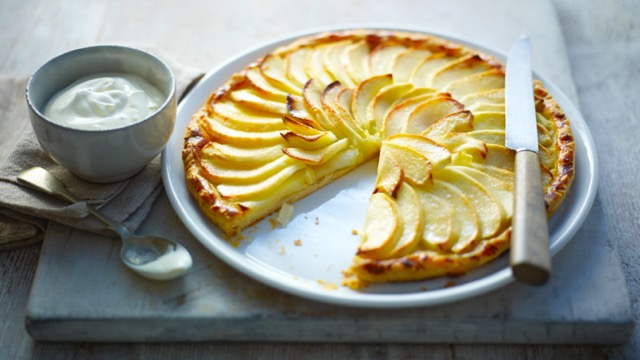

Apple Tart

Description
This easy apple tart uses shop bought puff pastry
to speed things up. Laced with calvados and topped
with soft Chantilly. Look out for all-butter puff
for the best flavour.
Ingredients
For the tart
- 200g ready made puff pastry
- 2 tbsp stewed apple/sweet apple sauce
- 6 apples (Cox or Granny Smith), peeled, quartered and cored
- 2 tbsp caster sugar
- 40g butter, cubed
- 1 free-range egg yolk, beaten
For the Chantilly cream
- 250ml/9fl oz double cream
- 1 tbsp icing sugar
- 1 vanilla pod, seeds scraped out
Method
- Preheat the oven to 200C/180C Fan/Gas 6.
- Roll the puff pastry out on a clean work surface
to a large sheet, 3mm thick. Using a bowl or plate,
cut a circle about 25cm/10in in diameter. Crimp the
edge before turning the whole sheet over and laying
it directly onto a flat baking tray. Chill in the fridge
for at least 10 minutes.
- Remove the pastry from the fridge and spread the apple
compote all over the base of pastry, leaving a 1cm
border at the edge.
- Slice the apples the thickness of a two-pound coin and
place them onto the pastry sheet, fanning them out, starting
from the outside and working in. The apples should overlap
each other. Use the largest slices on the outside and place
the smallest slices in the middle of the tart.
- Once all the apples have been laid out, sprinkle over
the caster sugar and dot with the cubed butter. Brush the
border with the beaten egg and bake in the oven for about
30 minutes, or until golden-brown and risen around the edge.
- For the Chantilly cream, whisk the cream, icing sugar and
seeds from the vanilla pod in a bowl until very soft peaks
form and set aside until ready to serve.
- When ready to serve, place the tart onto a serving
plate. Warm the calvados in a small saucepan. Ignite
the alcohol with a match (be careful of your fingers) and
pour over the tart. Serve with Chantilly cream.